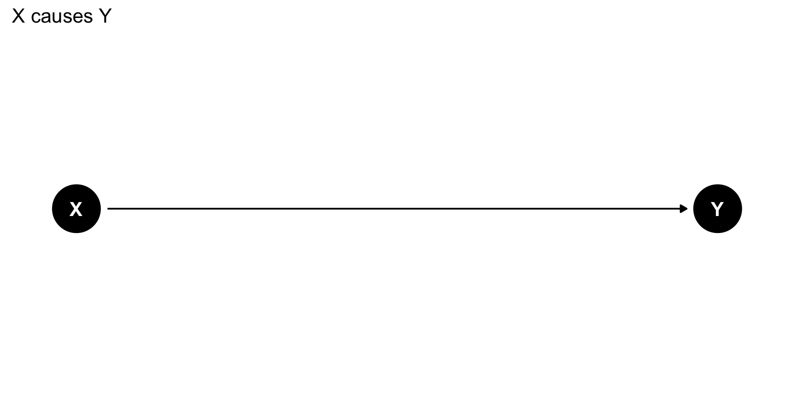
Causal Inference
What is Causal Inference?
Statistics tells us: Variables are associated
Causal inference asks: Does changing one variable cause changes in another?
Moving from “X is correlated with Y” to “X causes Y”
Causal DAGs
What is a DAG?
DAG = Directed Acyclic Graph
A visual tool for representing our assumptions about how variables cause each other
Components:
- Nodes: Variables (circles)
- Arrows: Causal relationships (X → Y means “X causes Y”)
- Directed: Arrows have direction
- Acyclic: No feedback loops
A Simple DAG
This DAG says: X has a causal effect on Y
Why Do We Need DAGs?
Problem: Correlation ≠ Causation
Example: Ice cream sales and drowning deaths are correlated
Does ice cream cause drowning? 🍦 → 🌊❓
No! Temperature causes both:
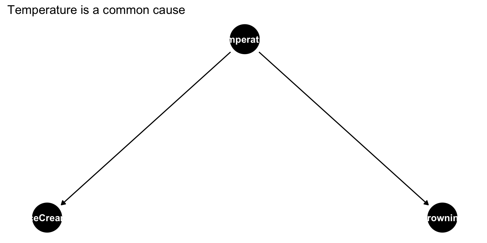
DAGs help us think clearly about what causes what
The Fundamental Problem of Causal Inference
Potential Outcomes
Question: Does a drug (treatment) improve health outcomes?
For each person \(i\), there are two potential outcomes:
- \(Y_i(1)\) = outcome if person \(i\) receives treatment
- \(Y_i(0)\) = outcome if person \(i\) does not receive treatment
Individual treatment effect: \[\tau_i = Y_i(1) - Y_i(0)\]
The Fundamental Problem
We can only observe ONE potential outcome for each person!
If person \(i\) gets treatment, we see \(Y_i(1)\) but not \(Y_i(0)\)
If person \(i\) doesn’t get treatment, we see \(Y_i(0)\) but not \(Y_i(1)\)
The missing outcome is called the counterfactual
Average Treatment Effect (ATE)
Since we can’t measure individual effects, we focus on averages:
\[\text{ATE} = E[Y(1) - Y(0)] = E[Y(1)] - E[Y(0)]\]
In words: The average difference in outcomes if everyone was treated vs. if no one was treated
Naive Comparison Doesn’t Work
Tempting approach: Compare treated vs. untreated groups \[E[Y|X=1] - E[Y|X=0]\]
Problem: This is NOT the same as the ATE!
\[E[Y|X=1] - E[Y|X=0] \neq E[Y(1)] - E[Y(0)]\]
Why not? Because treatment and control groups might differ in other ways
Example: The Drug Study
Imagine a drug study where:
- Older people are more likely to receive the drug
- Older people tend to have worse health outcomes
- The drug actually helps (true effect = +10 points)
# Naive comparison
naive_estimate <- mean(data$outcome[data$treatment == 1]) -
mean(data$outcome[data$treatment == 0])
naive_estimate[1] 5.207985The naive estimate is wrong! It’s confounded by age
Confounders
What is a Confounder?
A confounder is a variable that:
- Affects the treatment/exposure
- Affects the outcome
- Is not caused by the treatment
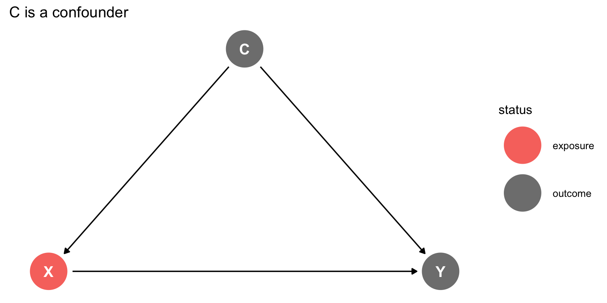
Why Confounders Matter
Confounders create spurious associations
The correlation between X and Y is not purely causal—some of it is due to C
Solution: We need to “control for” or “adjust for” the confounder
Example: Education and Income
Warning: The `use_labels` argument of `geom_dag()` must be a logical as of ggdag 0.3.0.
ℹ Set `use_labels = TRUE` and `label = label`
ℹ The deprecated feature was likely used in the ggdag package.
Please report the issue at <https://github.com/r-causal/ggdag/issues>.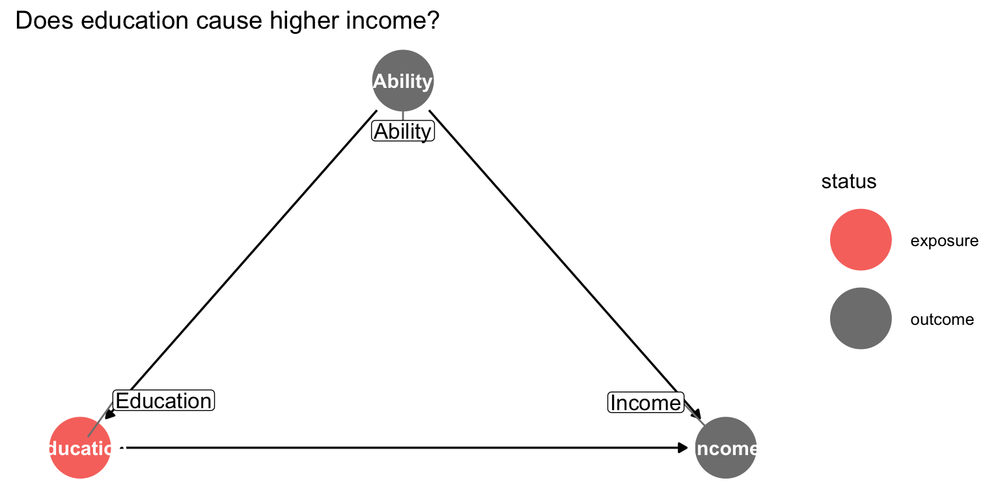
Ability is a confounder:
- Higher ability → more education
- Higher ability → higher income
If we don’t account for ability, we might overestimate education’s effect
Multiple Confounders
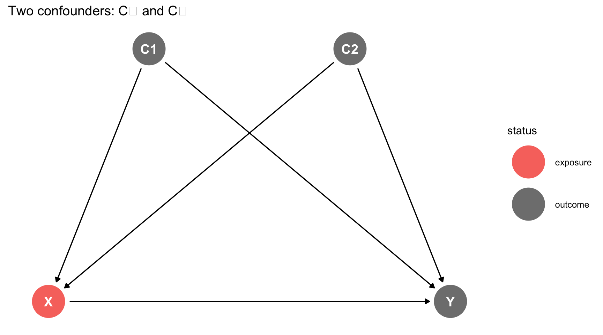
Real problems often have multiple confounders
We need to adjust for all of them to get the causal effect
Colliders
What is a Collider?
A collider is a variable that is caused by two other variables
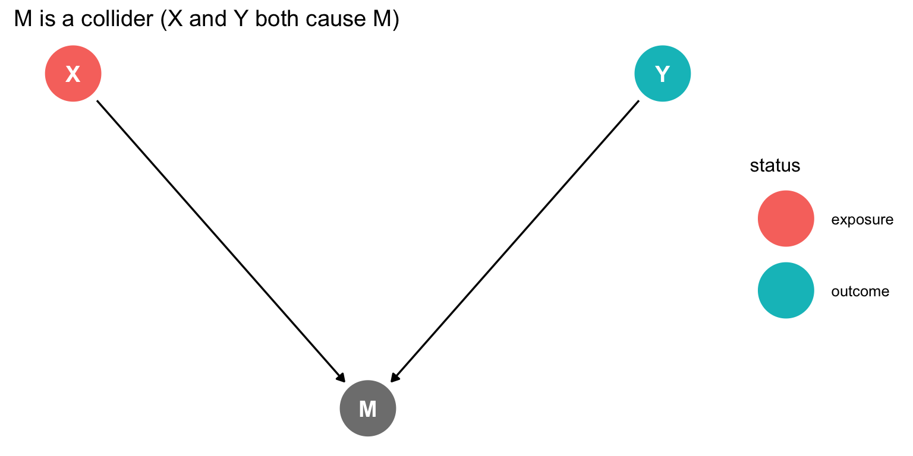
Key point: Arrows point into the collider
Why Colliders Are Dangerous
Critical rule: Do NOT control for colliders!
Controlling for a collider creates a spurious association between its causes
This is called collider bias or selection bias
Example: The Talent Paradox
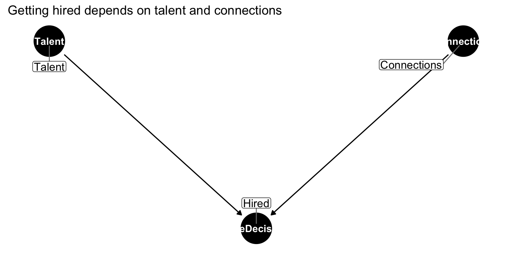
Among people who were hired (conditioning on the collider):
- High talent people may have few connections
- Low talent people may have many connections
- This creates a negative correlation that doesn’t exist in the full population!
Visualizing Collider Bias
`geom_smooth()` using formula = 'y ~ x'
`geom_smooth()` using formula = 'y ~ x'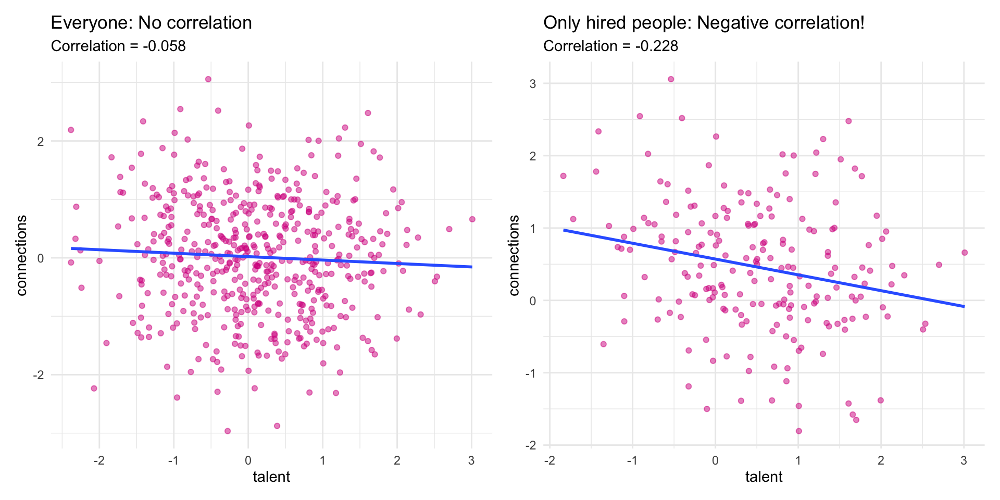
This is collider bias in action!
Confounder vs. Collider
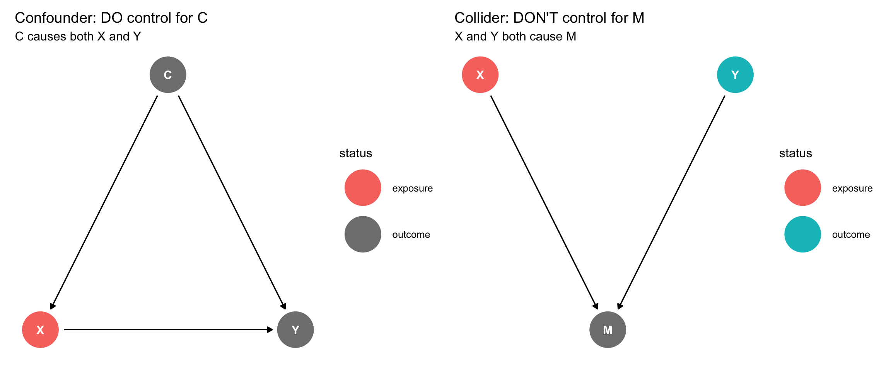
Rule of thumb:
- Arrows out → confounder → control for it
- Arrows in → collider → don’t control for it
Paths and Backdoor Paths
Paths in a DAG
A path is any route from X to Y following the arrows (in any direction)
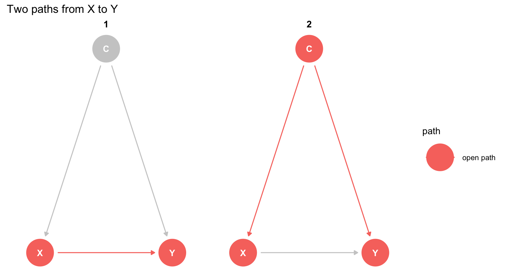
Path 1: X → Y (direct causal path)
Path 2: X ← C → Y (path through confounder)
Open vs. Closed Paths
Open path: Association can flow through it
Closed path: Association is blocked
A path is closed if:
- There’s a collider on the path (and we don’t condition on it), OR
- We condition on a non-collider on the path
Backdoor Paths
A backdoor path is a path from X to Y that starts with an arrow into X
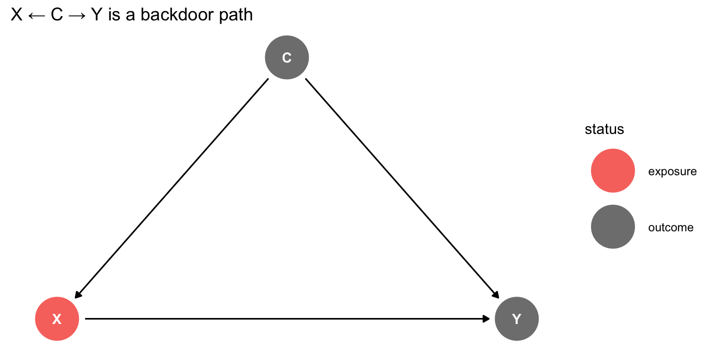
Backdoor paths create confounding!
They’re called “backdoor” because they sneak into X through the back
Why Backdoor Paths Matter
Goal of causal inference: Isolate the causal effect of X on Y
Problem: Open backdoor paths allow non-causal association to flow
Solution: Close all backdoor paths by conditioning on the right variables
Example: Multiple Backdoor Paths
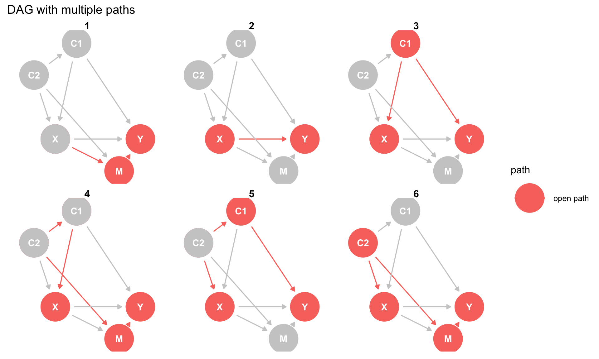
Backdoor paths:
- X ← C1 → Y
- X ← C2 → C1 → Y
- X ← C2 → M ← Y (closed! M is a collider)
Finding All Paths
library(dagitty)
# Define the DAG
dag <- dagitty('dag {
C2 -> C1 -> X
C2 -> X
C1 -> Y
C2 -> M <- X
X -> Y
M -> Y
}')
# Find all paths from X to Y
paths(dag, "X", "Y")$paths
[1] "X -> M -> Y" "X -> M <- C2 -> C1 -> Y"
[3] "X -> Y" "X <- C1 -> Y"
[5] "X <- C1 <- C2 -> M -> Y" "X <- C2 -> C1 -> Y"
[7] "X <- C2 -> M -> Y"
$open
[1] TRUE FALSE TRUE TRUE TRUE TRUE TRUEAdjustment Sets
What is an Adjustment Set?
An adjustment set is a set of variables that, if we condition on them (control for them), will:
- Close all backdoor paths from X to Y
- Not open any new biasing paths
In other words: Variables that give us the causal effect when we include them in a regression
Finding Adjustment Sets
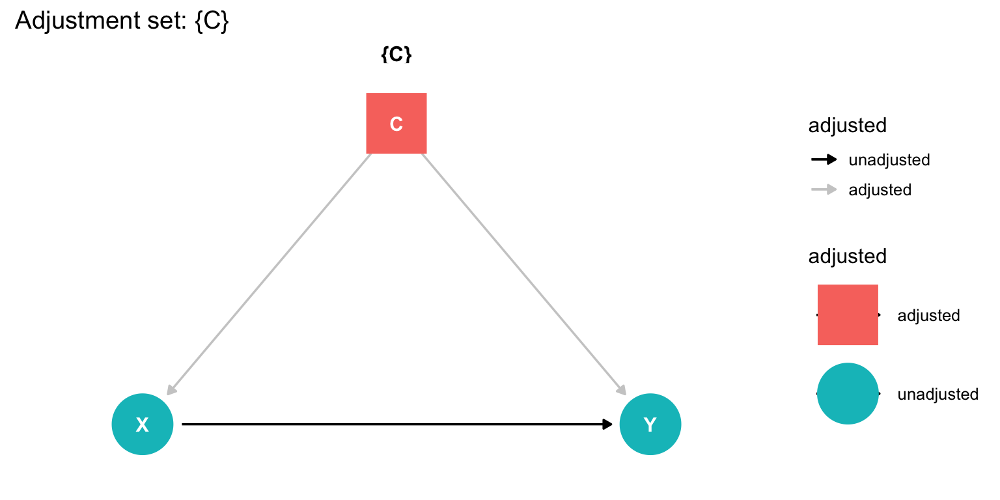
For this simple DAG, we need to adjust for C
Using dagitty to Find Adjustment Sets
# Simple confounder DAG
simple_dag <- dagitty('dag {
C -> X -> Y
C -> Y
}')
# Find adjustment sets
adjustmentSets(simple_dag, exposure = "X", outcome = "Y"){ C }Result: We need to adjust for C
The Backdoor Criterion
A set of variables satisfies the backdoor criterion if:
- No variable in the set is a descendant of X (not caused by X)
- The set blocks all backdoor paths from X to Y
Practical meaning: These are valid adjustment sets
Example: What NOT to Control For
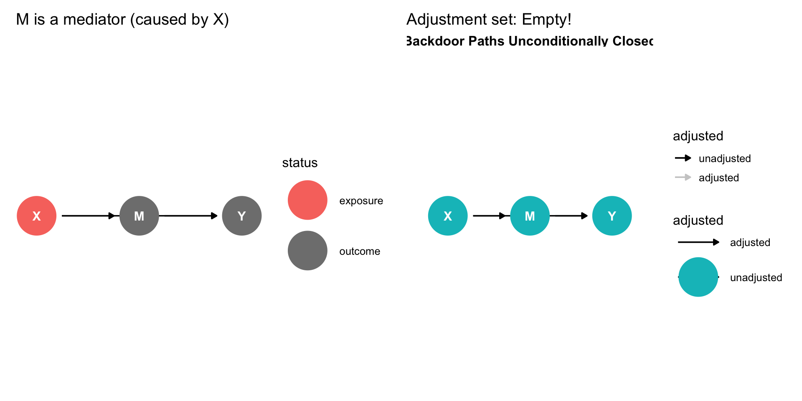
Don’t control for mediators! They’re part of the causal effect we want to measure
Multiple Valid Adjustment Sets
# More complex DAG
complex_dag <- dagitty('dag {
C1 -> X -> Y
C2 -> X -> Y
C1 -> Y
C2 -> Y
C1 -> C2
}')
adjustmentSets(complex_dag, exposure = "X", outcome = "Y"){ C1, C2 }Multiple valid options:
- Adjust for {C1, C2}
- Adjust for {C2} alone
Both work! Usually we prefer smaller sets (fewer variables to measure)
The Minimally Sufficient Adjustment Set
# Same complex DAG
adjustmentSets(complex_dag, exposure = "X", outcome = "Y",
type = "minimal"){ C1, C2 }Minimal set: The smallest set that closes all backdoor paths
Useful when data collection is expensive!
Visualizing Adjustment Sets
Warning: The `use_labels` argument of `geom_dag()` must be a logical as of ggdag 0.3.0.
ℹ Set `use_labels = TRUE` and `label = name`
ℹ The deprecated feature was likely used in the ggdag package.
Please report the issue at <https://github.com/r-causal/ggdag/issues>.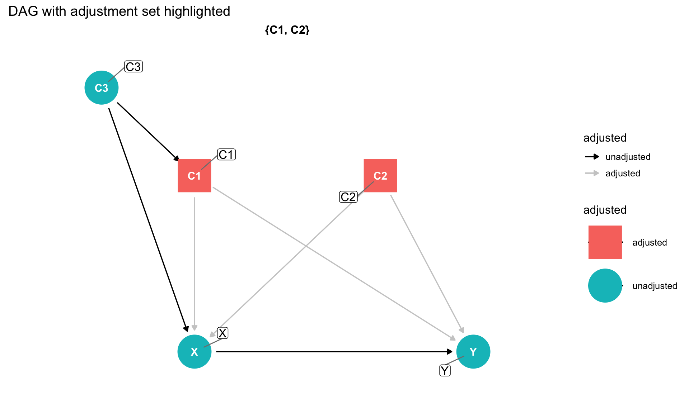
From DAGs to Regression
The Adjustment Formula
Once we identify an adjustment set Z, we can estimate the ATE:
\[E[Y(1) - Y(0)] = E_Z[E[Y|X=1, Z] - E[Y|X=0, Z]]\]
In words:
- Within each value of Z, compute \(E[Y|X=1, Z] - E[Y|X=0, Z]\)
- Average these differences across the distribution of Z
Simple Linear Regression Approach
If we assume a linear model: \[Y = \beta_0 + \beta_1 X + \beta_2^T Z + \varepsilon\]
Then under certain conditions (no interactions, etc.): \[\hat{\beta}_1 = \text{Average Treatment Effect}\]
This is why we “control for” confounders in regression!
Assumptions for Linear Regression = ATE
For \(\hat{\beta}_1\) to equal the ATE, we need:
- Correct adjustment set: Z satisfies the backdoor criterion
- No unmeasured confounding: We measured all confounders
- Linearity: Effects are additive (no interactions)
- Positivity: Every unit has non-zero probability of both treatment and control
Example: Simulated Data
Naive Regression (Confounded)
Wrong! This is biased because C affects both X and Y
Adjusted Regression (Correct)
Correct! This recovers the true ATE of 2 (plus sampling error)
Why This Works: FWL Perspective
Remember the Frisch-Waugh-Lovell theorem?
When we regress Y ~ X + C, the coefficient on X is:
The relationship between the part of Y that C can’t explain and the part of X that C can’t explain
This is exactly what we want! We’ve removed C’s confounding influence
Visualizing the Adjustment
`geom_smooth()` using formula = 'y ~ x'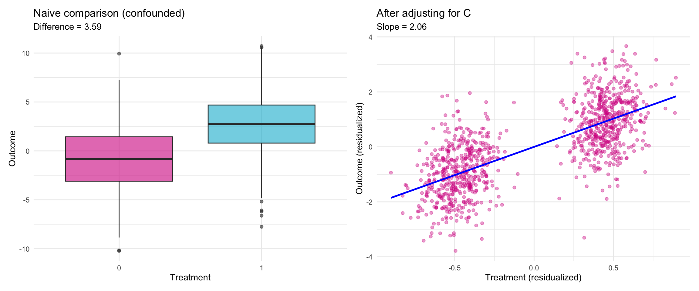
Continuous Treatments
Everything works for continuous treatments too!
set.seed(101)
n <- 500
C <- rnorm(n)
X_continuous <- 0.5 * C + rnorm(n) # continuous treatment
Y_continuous <- 2 * X_continuous + 3 * C + rnorm(n)
# Adjusted regression
model_continuous <- lm(Y_continuous ~ X_continuous + C)
coef(model_continuous)["X_continuous"]X_continuous
2.043145 Interpretation: A 1-unit increase in X causes a 2-unit increase in Y (approximately)
G-Computation for Linear Regression
What is G-Computation?
G-computation (generalized computation) is a method to estimate causal effects by:
- Fitting a model for the outcome
- Predicting outcomes under different treatment values
- Averaging these predictions
Alternative name: Standardization, outcome regression
The G-Computation Formula
Recall the adjustment formula: \[E[Y(1)] = E_Z[E[Y|X=1, Z]]\]
G-computation procedure:
- Fit \(E[Y|X, Z]\) (our outcome model)
- For each unit, predict \(\hat{Y}_i(1)\) setting \(X=1\), using their \(Z_i\)
- Average: \(\frac{1}{n}\sum_i \hat{Y}_i(1)\)
- Repeat for \(X=0\) to get \(\hat{E}[Y(0)]\)
- ATE = \(\hat{E}[Y(1)] - \hat{E}[Y(0)]\)
Why Bother with G-Computation?
For simple linear models with no interactions: The regression coefficient equals the ATE
G-computation becomes useful when:
- You have interactions between treatment and covariates
- You have non-linear models
- You want to estimate effects on different scales
Key advantage: Works even when effects are heterogeneous
G-Computation: Step by Step
G-Computation: Step 2-3
# Step 2: Create datasets with everyone treated and untreated
data_all <- data.frame(X = X, C = C, Y = Y)
# Everyone treated (X = 1)
data_treated <- data_all
data_treated$X <- 1
# Everyone untreated (X = 0)
data_control <- data_all
data_control$X <- 0G-Computation: Step 4-5
# Step 3: Predict outcomes under both scenarios
Y1_pred <- predict(outcome_model, newdata = data_treated)
Y0_pred <- predict(outcome_model, newdata = data_control)
# Step 4: Average predictions
E_Y1 <- mean(Y1_pred)
E_Y0 <- mean(Y0_pred)
# Step 5: Compute ATE
ATE_gcomp <- E_Y1 - E_Y0
ATE_gcomp[1] 2.055629Same as the regression coefficient! (for linear models with no interactions)
Comparing Methods
data.frame(
Method = c("Naive", "Regression", "G-computation", "Truth"),
Estimate = c(
coef(lm(Y ~ X))["X"],
coef(lm(Y ~ X + C))["X"],
ATE_gcomp,
2.0
)
) Method Estimate
1 Naive 3.592165
2 Regression 2.055629
3 G-computation 2.055629
4 Truth 2.000000All adjusted methods recover the truth!
When G-Computation Differs: Interactions
Now the treatment effect is not constant:
- When C = 0, effect is 2
- When C = 1, effect is 2 + 1.5 = 3.5
Interaction Model: Regression Approach
(Intercept) X C X:C
-0.02633241 2.00336912 3.02900338 1.46093832 Question: What’s the average treatment effect?
Problem: The coefficient on X (2.03) is the effect when C = 0, not the average!
Interaction Model: G-Computation
# Create counterfactual datasets
data_all_int <- data.frame(X = X, C = C, Y = Y_interact)
data_treated_int <- data_all_int
data_treated_int$X <- 1
data_control_int <- data_all_int
data_control_int$X <- 0
# Predict and average
Y1_pred_int <- predict(interact_model, newdata = data_treated_int)
Y0_pred_int <- predict(interact_model, newdata = data_control_int)
ATE_gcomp_int <- mean(Y1_pred_int) - mean(Y0_pred_int)
ATE_gcomp_int[1] 2.020508G-computation gives us the average effect across the distribution of C!
Why G-Computation Works Here
The average treatment effect is: \(\text{ATE} = E[2 + 1.5 \times C]\)
Since \(E[C] \approx 0\), the ATE \(\approx 2\)
G-computation automatically:
- Computes effect for each value of C
- Averages using the actual distribution of C
Regression coefficient: Only gives effect at C = 0
Visualizing Heterogeneous Effects
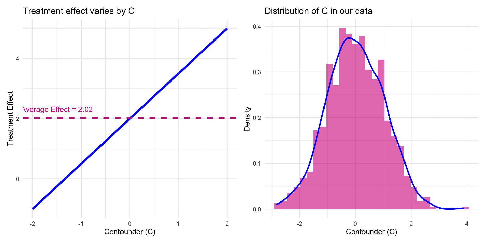
G-computation averages the blue line using the distribution on the right
G-Computation Algorithm Summary
For any outcome model:
- Fit model: \(E[Y|X, Z]\)
- Create \(n\) copies of data with \(X = 1\)
- Predict: \(\hat{Y}_i(1)\) for each unit
- Create \(n\) copies of data with \(X = 0\)
- Predict: \(\hat{Y}_i(0)\) for each unit
- Compute: \(\hat{\text{ATE}} = \frac{1}{n}\sum_i[\hat{Y}_i(1) - \hat{Y}_i(0)]\)
When to Use G-Computation
Use regression coefficient when:
- Linear model with no interactions
- You want a simple interpretation
- Interested in the conditional effect
Use G-computation when:
- Model has interactions
- Non-linear models (logistic, etc.)
- Want marginal/population-average effects
- Need predictions under hypothetical interventions
G-Computation with Multiple Treatment Levels
G-Computation: Multiple Comparisons
# Function to predict under treatment level k
predict_under_treatment <- function(k) {
data_k <- data.frame(X_multi = k, C = C)
mean(predict(model_multi, newdata = data_k))
}
# Compute E[Y(k)] for each treatment level
EY <- sapply(0:2, predict_under_treatment)
# Pairwise comparisons
data.frame(
Comparison = c("1 vs 0", "2 vs 0", "2 vs 1"),
Effect = c(EY[2] - EY[1], EY[3] - EY[1], EY[3] - EY[2])
) Comparison Effect
1 1 vs 0 2.102201
2 2 vs 0 4.166503
3 2 vs 1 2.064302G-computation easily handles multiple treatment levels!
Putting It All Together
The Complete Workflow
Step 1: Draw the DAG
- List all relevant variables
- Draw arrows based on domain knowledge
- Identify treatment (X) and outcome (Y)
Step 2: Identify adjustment set
- Find all backdoor paths
- Determine minimal sufficient adjustment set
- Check for colliders (don’t adjust!)
The Complete Workflow (continued)
Step 3: Collect data
- Measure treatment, outcome, and adjustment set
- More data is better (reduces sampling variability)
Step 4: Fit the model
- Start with linear regression: Y ~ X + Z
- Consider interactions if theory suggests heterogeneity
Step 5: Estimate the ATE
- Simple model: Use coefficient
- Complex model: Use G-computation
Example: Complete Analysis
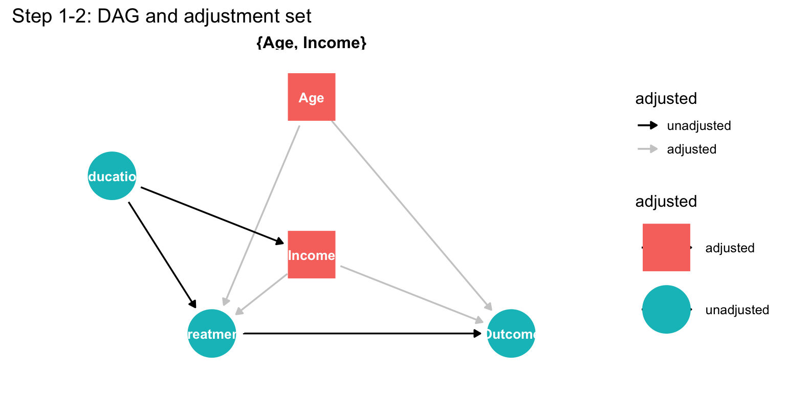
Adjustment set: {Age, Income} (or {Age, Income, Education})
Example: Generate Data
# Step 3: Generate data (in practice, collect real data)
set.seed(404)
n <- 800
Education <- rnorm(n)
Age <- rnorm(n)
Income <- 0.5 * Education + rnorm(n)
Treatment <- rbinom(n, 1, plogis(0.3*Age + 0.4*Income + 0.2*Education))
Outcome <- 3 * Treatment + 2 * Age + 1.5 * Income + rnorm(n)
analysis_data <- data.frame(Treatment, Outcome, Age, Income, Education)Example: Naive Analysis (Wrong!)
# Ignoring confounders
naive <- lm(Outcome ~ Treatment, data = analysis_data)
coef(naive)["Treatment"]Treatment
4.403605 Biased! We didn’t account for confounding
Example: Adjusted Analysis (Correct)
# Adjusting for minimal sufficient set {Age, Income}
adjusted <- lm(Outcome ~ Treatment + Age + Income,
data = analysis_data)
coef(adjusted)["Treatment"]Treatment
3.044459 Close to truth (3.0)! We properly adjusted for confounders
Example: With Education Too
# Including Education (also valid but not necessary)
adjusted_edu <- lm(Outcome ~ Treatment + Age + Income + Education,
data = analysis_data)
coef(adjusted_edu)["Treatment"]Treatment
3.060204 Still correct! Both adjustment sets work
Practical tip: When in doubt, include more confounders (but never colliders!)
Key Assumptions to Remember
1. No unmeasured confounding
- We measured all confounders
- Hardest assumption to verify!
- Requires domain knowledge
2. Positivity
- Everyone has some chance of treatment and control
- Check for overlap in covariate distributions
3. Correct model specification
- For linear regression: linearity, no important interactions (or include them)
- Less critical with flexible models + G-computation
Checking Positivity
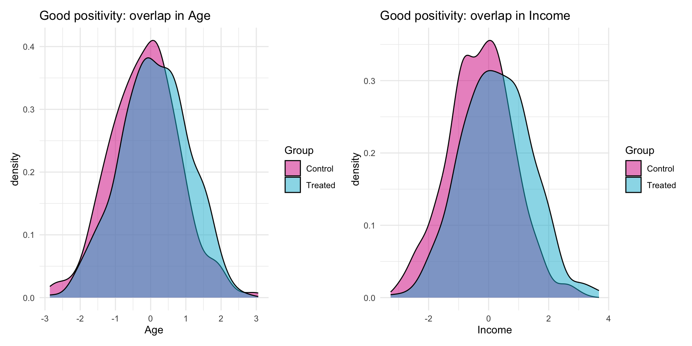
Good positivity: Both treatment groups span similar covariate values
Common Pitfalls
❌ Controlling for colliders
Creates bias where there was none!
❌ Not controlling for confounders
Leads to biased estimates
❌ Controlling for mediators
Blocks the causal effect you want to measure
❌ Interpreting regression coefficients as causal without thinking about the DAG
Correlation ≠ causation!
Tips for Success
✓ Start with the DAG
Think causally before looking at data
✓ Use domain knowledge
Statistics can’t tell you what causes what
✓ Be transparent about assumptions
No unmeasured confounding is a strong assumption
✓ Consider sensitivity analyses
What if there’s an unmeasured confounder?
Summary
What We Learned
DAGs are visual tools for causal assumptions
- Nodes = variables, Arrows = causal effects
Confounders create spurious associations
- Cause both treatment and outcome
- Must adjust for them
Colliders create bias when controlled
- Caused by two other variables
- Do NOT adjust for them
What We Learned (continued)
Backdoor paths create confounding
- Paths from X to Y that go “backwards” into X
- Must be closed to get causal effects
Adjustment sets are sets of variables that:
- Close all backdoor paths
- Don’t open new biasing paths
- Can be found using dagitty
What We Learned (continued)
Linear regression estimates causal effects when:
- We adjust for a valid adjustment set
- No unmeasured confounding
- Model is correctly specified
G-computation extends to complex settings:
- Interactions between treatment and covariates
- Multiple treatment levels
- Provides population-average effects
The Big Picture
Causal inference is about asking the right question:
Not “Are X and Y associated?”
But “Would changing X change Y?”
DAGs help us:
- Make our assumptions explicit
- Identify what to control for
- Avoid common pitfalls
With the right adjustment and assumptions, linear regression can answer causal questions!
Further Reading
Books:
- Causal Inference: The Mixtape by Scott Cunningham
-
The Effect by Nick Huntington-Klein
- Causal Inference: What If by Hernán and Robins
Online Resources:
- Lucy D’Agostino McGowan’s blog and courses
- Malcolm Barrett’s ggdag vignettes and tutorials
- dagitty.net for interactive DAG drawing
R Packages:
-
ggdagfor DAG visualization -
dagittyfor identifying adjustment sets -
causaldatafor practice datasets
Practice Problems
1. Draw DAGs for:
- Does college education cause higher income?
- Does social media use cause depression?
- Does exercise cause weight loss?
2. For each DAG:
- Identify confounders and colliders
- Find adjustment sets
- Think about unmeasured confounders
3. Simulate data matching your DAG and verify your adjustments work!
Thank You!
Remember:
- Always draw the DAG first
- Think carefully about causation
- Be honest about assumptions
- No method can overcome bad assumptions
Questions?